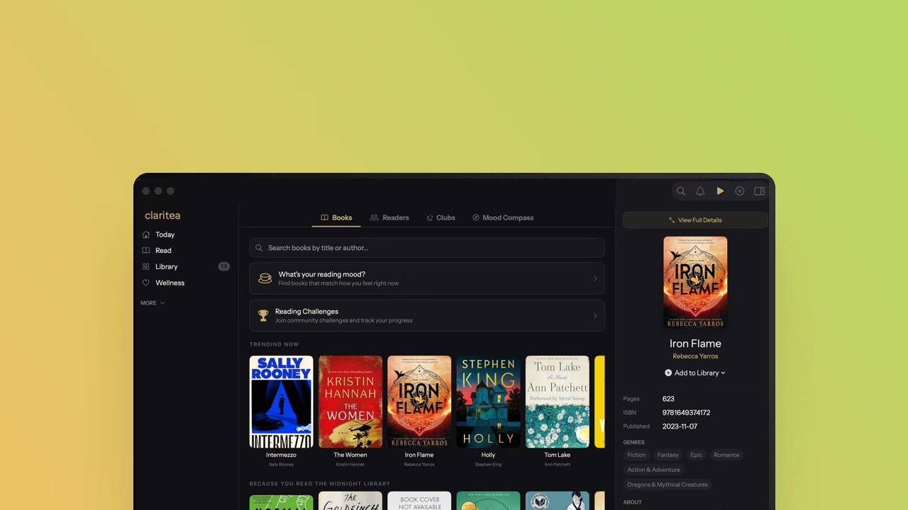
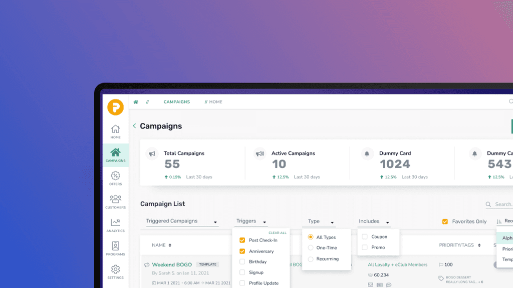
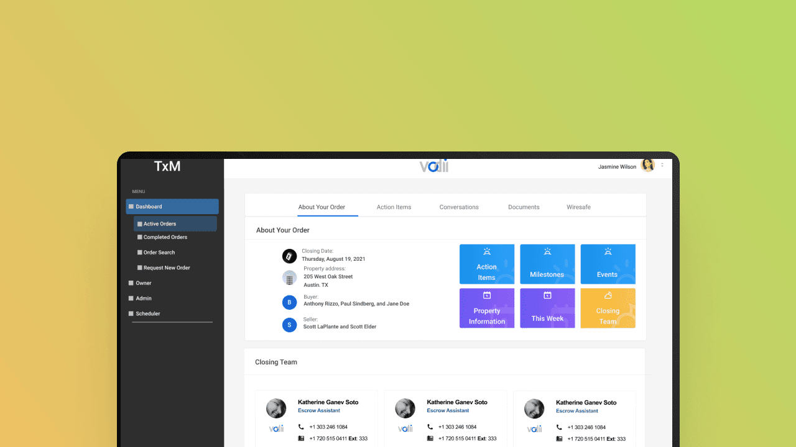
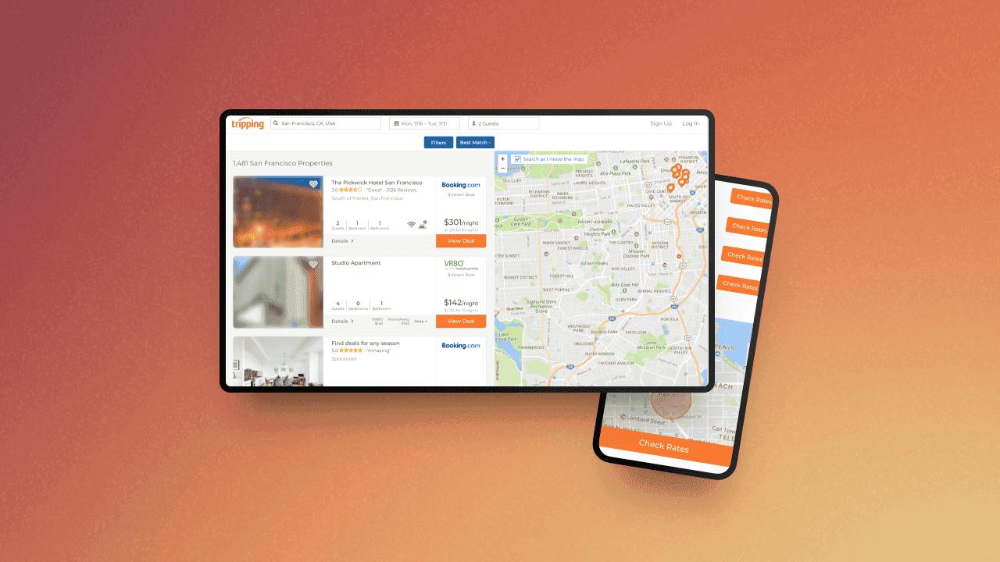

Work
These are the projects I can talk about in some detail. Healthcare, enterprise, and a product I built myself.
I’m a UX engineer and front-end developer in Austin. I studied art and computer science. I design the interface and I often write the code, which keeps me honest about what’s actually possible.
I’ve spent the last eight years as the lead — and often only — designer at places like Nevro, Qualtrics, and Punchh. Understand the actual problem, then make the simplest thing that works.
When I’m not designing, I’m teaching kids to code through Colorful Coders or running my design agency, The Kinnect.

Claritea
Design and front-end
I interviewed ADHD and wellness readers, then designed and built a session-based reading app — Focus Score from heart rate, not a yearly streak.

Nevro
Design and front-end
I sat with physicians in clinic, then designed the HCP Portal, patient app, and design system so they could monitor implants themselves.

Arrive Logistics
UX/UI design
I shadowed carriers on live calls. What they did and what they said didn’t match — the new board followed the workarounds.

Qualtrics
UX/UI design
I designed mobile almost from scratch — Magic Link with security, dashboards rebuilt for touch — and redesigned Create UI after testing how people actually start a survey.

Punchh
UX/UI design
Sole mobile designer. Competitive audit, then a white-label system that could do points or punch cards, simple add-ons or a full builder.

Vodii (Flueid)
Design, front-end and PM
I audited what we could keep, rebuilt the rest, and wrote the production front-end. Signing, sharing, tracking first — then a system that could take new features.

Tripping
UX design
First UX role. I audited homepage through listings, then worked with engineering to rank host photos with ML so the first image wasn’t a dark kitchen.